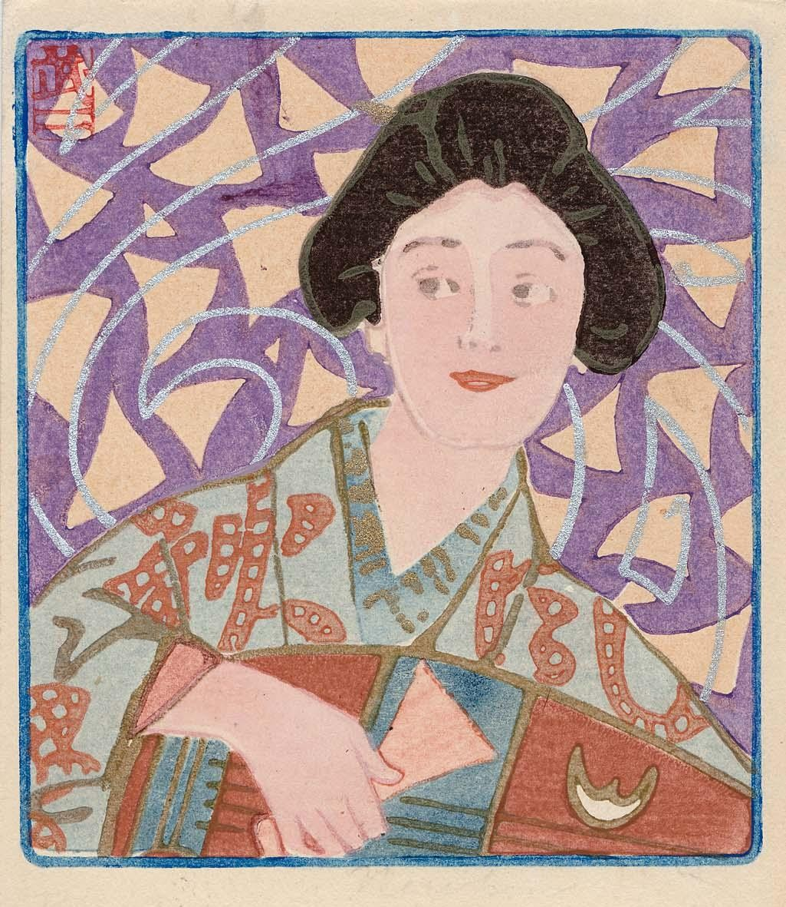
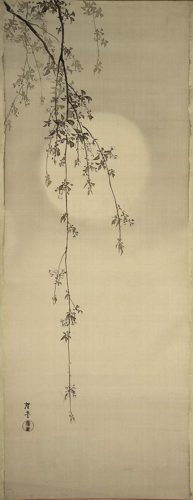
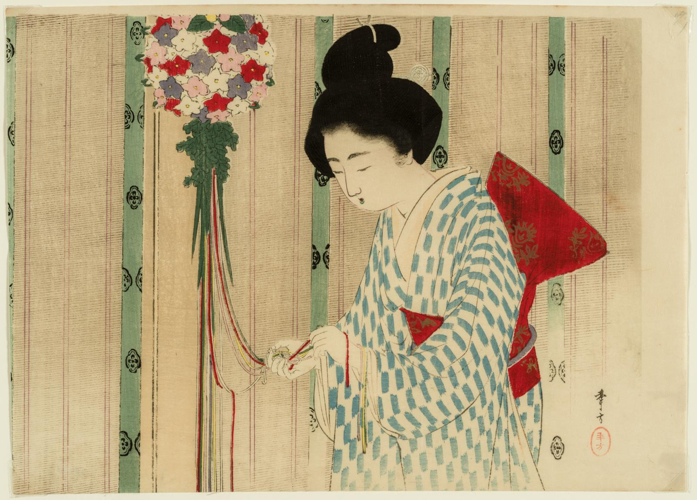

GEISHA AND BIWA
Fujishima Takeji (1867-1943)
From series Beautiful women and music
Postcard
1905

Fujishima Takeji (1867-1943)
From series Beautiful women and music
Postcard
1905
When the postcard was first introduced in Japan by its government in 1873,
it was just one part of an unprecedented campaign of modernization begun in 1868 in the name of the emperor Meiji (reigned 1868-1912). The arrival of the United States Navy Admiral Matthew Perry's "black ships"
in 1853 had forced Japan to repudiate its centuries-old policy of national seclusion, and the emperor's advisors decided on a course of adopting Western technology and cultural institutions in order to avoid the colonization
that had beset Japan's neighbors on the Asian continent. Along with major innovations in commerce and industry had come profound changes in nearly every sector of Japanese society: many forsook traditional dress for European-style attire;
lithography rapidly replaced woodblock printing and official buildings began to be constructed in brick in Wester architectural styles.
The first Japanese postcards were of the type devised by the Austro-Hungarian postal service four
years earlier and immediately adopted by other countries in Europe. Simple in design, they had spaces for an address and imprinted stamp on one side and a blank space for the message on the other.

Terasaki Kōgyō
Hanging Silk Scroll
Meiji Era, 1890-1910

Mizuno Toshikata
Woodblock Print
1902
The Japanese postal service itself had been reformed after that of England beginning in 1871, and like the system it emulated, the Japanese service at first declared that the exclusive right of publishing postcards belonged to the government.
For the next twenty-seven years of their use in Japan, the Teishinshō (Ministry of Communications) retained that right; while in Europe hundreds of millions of postcards were produced by the late 1890s by private firms and magazines, such as
the German Simplicissmus and the French Cocorico and Lie Rire.
It is difficult to imagine today how important the Japanese government's announcement of October 1900, that it would relinquish control over the publication of postcards,
was to Japanese society. Almost immediately Japan found in the postcard a means for different sectors — department stores, medical schools, artists associations, and the military — to project new images of themselves, and for the ever-increasing numbers
of literate individuals to advertise their modernity. Futhermore, the postcard made possible the wide and rapid circulation of an exciting, innovative visual vocabulary that had developed in response to broad debates about Japanese national identity and
power, as well as about the course htat Japanese art should take in the face of...
*Read more in the full text